Distributor Rotors
1972-1989 KEM W282X Distributor Rotor Honda Civic Accord Subaru GL DL NOS Brat
W282X
Fits 1971 Mazda 1200 · 1971 Mazda 616 (312 listed)
$12.99
View details67 parts whose listing names at least one Mazda vehicle, mostly ignition & tune-up, engine parts and brakes & suspension. Fit depends on year, model and engine, so check the full vehicle list on each part page or message us before you buy.
67 parts
Online checkout through Square. Ships from Carbondale, PA, or pick up by confirmed appointment only. Fitment question? Message us.
W282X
Fits 1971 Mazda 1200 · 1971 Mazda 616 (312 listed)
$12.99
View details
W286X
Fits 1972-1976 Mazda 808 · 1971 Mazda 1200 (644 listed)
$31.99
View details
W393X
Fits 1979-1982 Mazda 626 · 1989-1991 Hyundai Sonata (115 listed)
$19.99
View details
W3016X
Fits 1970-1971 Mazda 1800 · 1971-1972 Mazda 616 (320 listed)
$14.99
View details
269
Fits 1994 Mazda B3000 · 1984-1997 Ford F-150 (1848 listed)
$12.99
View details
139-101
Fits 1993-1995 Mazda 626 · 1993-1995 Mazda MX-6 (2927 listed)
$17.99
View details
W3030X
Fits 1986-1989 Mazda 323 · 1988-1990 Mercury Tracer (36 listed)
$16.99
View details
W2012X
Fits 1986-1989 Mazda 323 · 1987-1989 Mercury Tracer (47 listed)
$19.99
View details
W2011
Fits 1988-1989 Mazda 323 · 1986-1992 Mazda 626 (98 listed)
$14.99
View details
W3044
Fits 1988-1992 Mazda 626 · 1988-1992 Mazda MX-6 (41 listed)
$14.99
View details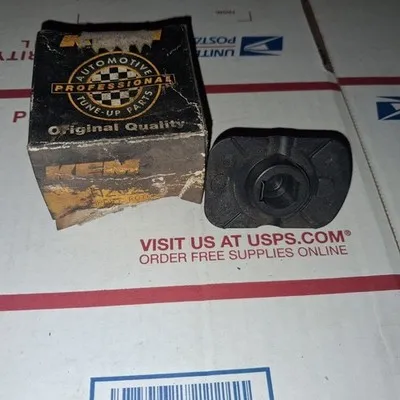
W2028
Fits 1991-1993 Mazda B2200 · 1989 Mazda B2600 (57 listed)
$25.99
View details
W3045
Fits 1992-1994 Mazda 323 · 1988-1991 Mazda 626 (141 listed)
$14.99
View details
W2092
Fits 1990-1994 Mazda 323 · 1990-1994 Mazda Protege (191 listed)
$14.99
View details
W3034
Fits 1972 Mazda 618 · 1972-1974 Mazda 808 (230 listed)
$23.99
View details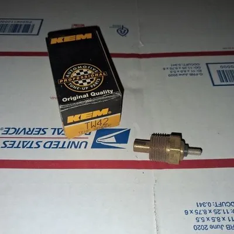
TW42
Fits 1995-1996 Mazda B4000 · 1994 Mazda Navajo (1707 listed)
$18.99
View details
8689
Fits 1988-2002 Mazda 626 · 1990-1997 Mazda Miata (229 listed)
$13.99
View details
9081
Fits 1990-1993 Mazda Miata · 1991-1997 Isuzu Rodeo (147 listed)
$21.99
View details
9095
Fits 1987-2011 Mazda · 1991-2011 Ford Explorer (3 listed)
$19.99
View details
045-0253
Fits 1990-2005 Mazda Miata · 1983-1985 Toyota Corolla (78 listed)
$12.99
View details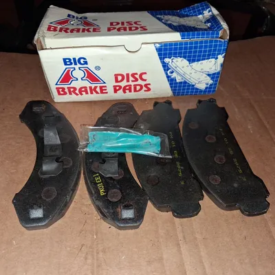
BDK271
Fits 1991-1994 Mazda Navajo · 1987-1997 Ford Aerostar (650 listed)
$29.99
View details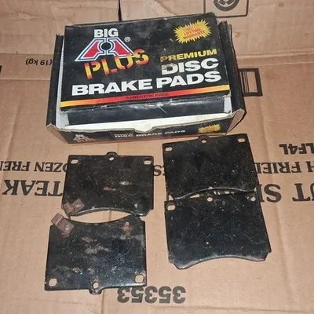
1-7353
Fits 1992-1995 Mazda MX-3 · 1990-1997 Mazda Protege (185 listed)
$29.99
View details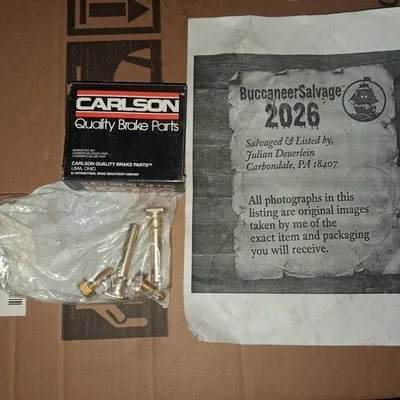
14082
Fits 2004-2011 Mazda RX-8 · 1988-1997 Honda Accord (2063 listed)
$12.99
View details
H2118-2
Fits 1995-2009 Mazda B4000 · 1995-2009 Mazda B2300 (585 listed)
$12.99
View details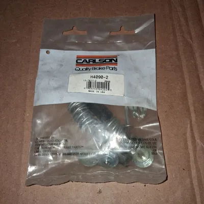
H4090-2
Fits 1991-1994 Mazda Navajo · 1986-1989 Ford Aerostar (1860 listed)
$12.99
View details
H2108
Fits 1990-1994 Mazda 323 · 1972-1977 Mazda 808 (3000 listed)
$12.99
View details
H5064
Fits 1995-2002 Mazda B2300 · 1998-2001 Mazda B2500 (3000 listed)
$13.99
View details
H5412
Fits 1994 Mazda B2300 · 1994 Mazda B3000 (3000 listed)
$12.99
View details
H5677Q
Fits 2003-2010 Mazda B2300 · 2003-2008 Mazda B3000 (235 listed)
$12.99
View details
H7302
Fits 2010 Mazda B4000 · 2004-2008 Chrysler Pacifica (884 listed)
$20.99
View details
H9415
Fits 1994 Mazda B2300 · 1994 Mazda B3000 (2483 listed)
$12.99
View details
SKF 19214
Fits 1994 Mazda B2300 · 1994 Mazda B3000 (652 listed)
$13.99
View details
HS9711PT
Fits 1993-1994 Mazda 626 · 1993-1994 Mazda MX-6 (10 listed)
$99.99
View details
31085
Fits 1982-1984 Mazda B2200 · 1987-1988 Mazda B2600 (3000 listed)
$17.99
View details
33189
Fits 1986-1988 Mazda RX-7 · 1985-1986 Chevrolet Astro (510 listed)
$15.99
View details
33299
Fits 1994-1997 Mazda B2300 · 1983-1997 Ford Ranger (371 listed)
$17.99
View details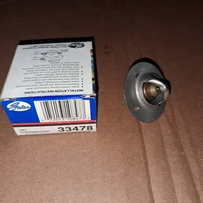
33478
Fits 1999-2008 Mazda B3000 · 1984-1985 Mazda 626 (1479 listed)
$14.99
View details
33479
Fits 1999-2008 Mazda B3000 · 1984-1985 Mazda 626 (817 listed)
$15.99
View details
33488
Fits 1971 Mazda 616 · 1972 Mazda 618 (1600 listed)
$26.99
View details
33489
Fits 1971 Mazda 616 · 1972 Mazda 618 (1658 listed)
$25.99
View details
33779
Fits 1994-2000 Mazda B4000 · 1991-1994 Mazda Navajo (794 listed)
$14.99
View details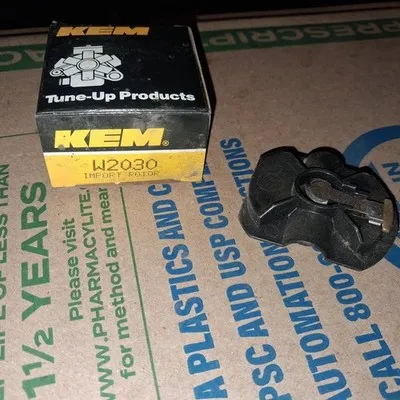
W2030
Fits 1990 Mazda B2600 (5 listed)
$19.99
View details
W377X
Fits 1984-1987 Mazda 626 · 1981-1984 Mazda B2000 (282 listed)
$14.99
View details
CV8415
Fits 1988-1992 Mazda 626 · 1988-1992 Mazda MX-6 (41 listed)
$19.99
View details
K90628
Fits 1998-1999 Mazda 626 (8 listed)
$19.99
View details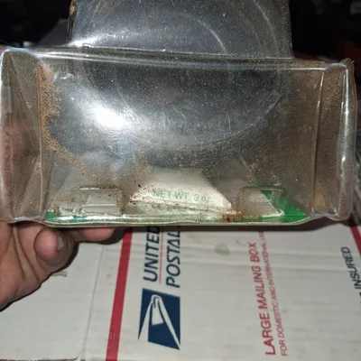
03611
Fits 1981-1983 Mazda GLC · 1979-1981 Datsun 310 (44 listed)
$29.99
View details
3622
Fits 1994-1995 Mazda 323 · 2001-2008 Mazda B2300 (1071 listed)
$17.99
View details
8660S
Fits 1994-2009 Mazda B4000 · 2006-2009 Ford Crown Victoria (1833 listed)
$13.99
View details
PT212
Fits 1984-1997 Mazda · 1984-1997 Ford F-150 (11 listed)
$39.99
View details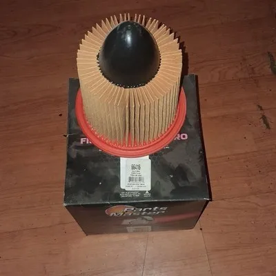
66416
Fits 1997 Mazda B2300 · 1997-2003 Ford Windstar (102 listed)
$14.99
View details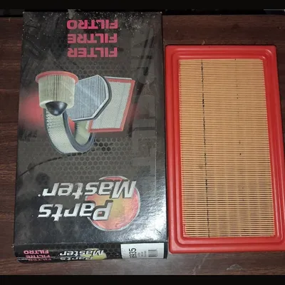
66935
Fits 2009-2013 Mazda 6 · 2007-2015 Mazda CX-9 (263 listed)
$18.99
View details
67002
Fits 2012-2023 Mazda 3 · 2017-2018 Mazda 6 (443 listed)
$12.99
View details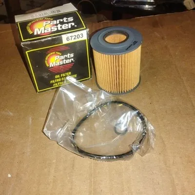
67203
Fits 2009-2012 Mazda 6 · 2008-2012 Ford Escape (46 listed)
$13.99
View details
66-1191
Fits 1987-1994 Mazda 323 · 1981-1985 Mazda GLC (401 listed)
$29.99
View details
K4500
Fits Mazda
$99.99
View details
CH-406
Fits 1984-1987 Mazda 626 · 1981-1984 Mazda B2000 (267 listed)
$14.99
View details
JR122T
Fits 1986-1989 Mazda 323 · 1987-1989 Mercury Tracer (50 listed)
$18.99
View details
JH-116
Fits 1986-1989 Mazda 323 · 1987-1990 Mercury Tracer (41 listed)
$14.99
View details
JR72
Fits 1971 Mazda 1200 · 1971 Mazda 616 (693 listed)
$12.99
View details
V226
Fits 1987-1988 Mazda B2600 · 1984-1987 Dodge Caravan (67 listed)
$17.99
View details
V268
Fits 1994 Mazda B3000 · 1986-1995 Ford Taurus (220 listed)
$14.99
View details
BD61992
Fits 1995 Mazda MX-3 · 1995-1996 Ford Escort (7 listed)
$24.99
View details
F110873
Fits 1987-1993 Mazda B2200 · 1994-1997 Mazda B2300 (519 listed)
$14.99
View details
F112409
Fits 1994 Mazda B2300 · 1994 Mazda B3000 (295 listed)
$14.99
View details
MKD466
Fits 1990-1995 Mazda 323 · 1990-1998 Mazda Protege (124 listed)
$24.99
View details
46097
Fits 1989-1994 Mazda 323 · 1991-1996 Mazda Miata (137 listed)
$25.99
View details
51347
Fits 1970-1971 Mazda 1800 · 1972-1982 Ford Courier (121 listed)
$13.99
View details
51372
Fits 1991-2017 Mazda · 1996-2001 Ford F-100 Ranger (11 listed)
$13.99
View details